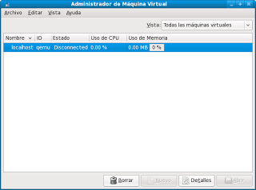
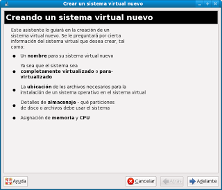
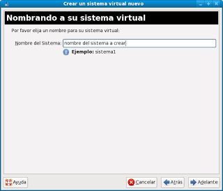
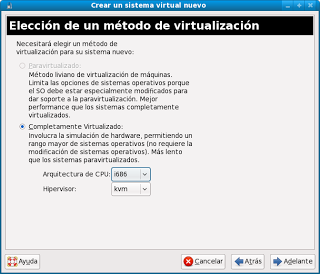
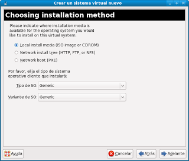
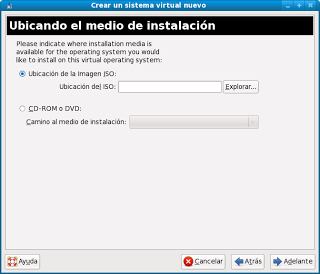
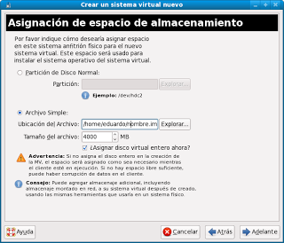
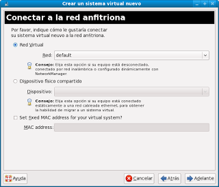
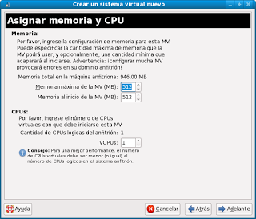
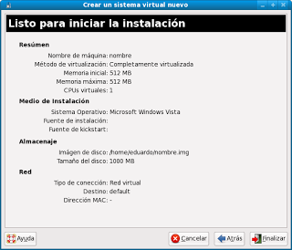

Nunca está de más poder crear máquinas virtuales en nuestro sistema, ya sea para hacer pruebas, levantar servidores o correr un sistema operativo alternativo.
En este caso crearemos una máquina virtual mediante virt-manager usando KVM, quien permite crear máquinas virtuales con Linux, Windows y otros.
Necesitamos instalar kvm y virt-manager:
yum install kvm virt-manager
Luego ejecutamos virt-manager (Aplicaciones -> Herramientas del Sistema -> Administrador de máquina virtual). No es necesario tener privilegios de root.
Presionamos el botón Nuevo para que el asistente se abra:
Ingresamos el nombre del sistema que estamos virtualizando.
Seleccionamos el hipervisor, en este caso KVM (puede ser QEMU o XEN si están instalados) y luego la arquitectura.
Luego debemos indicar desde donde instalaremos, puede ser desde un ISO o desde un CD/DVD, mediante HTTP, FTP, NFS o con PXE Netboot. Debemos indicar acá que tipo de OS instalaremos.
En este caso indiqué que se instalará desde CD/DVD/ISO. Debemos indicar desde donde se leerá, path del ISO o unidad de CD/DVD
Indicamos el lugar de instalación, puede ser una partición o un archivo.
Indicamos el tipo de red que emplearemos, puede ser con red vurtual, compartido (visible desde otros computadores)
Finalmente indicamos la cantidad de RAM y el número de CPUs de ser posible.
Confirmamos los datos:
En este punto se inicia una ventana con la máquina virtual, se deben seguir los pasos de instalación típicos de cada OS.
{kind=link}
{kind=link}
{kind=link}
{kind=link}
{kind=link}
{kind=link}
{kind=link}
{kind=link}
{kind=link}
{kind=link}
Luego de ello aparecerá la máquina en el listado.